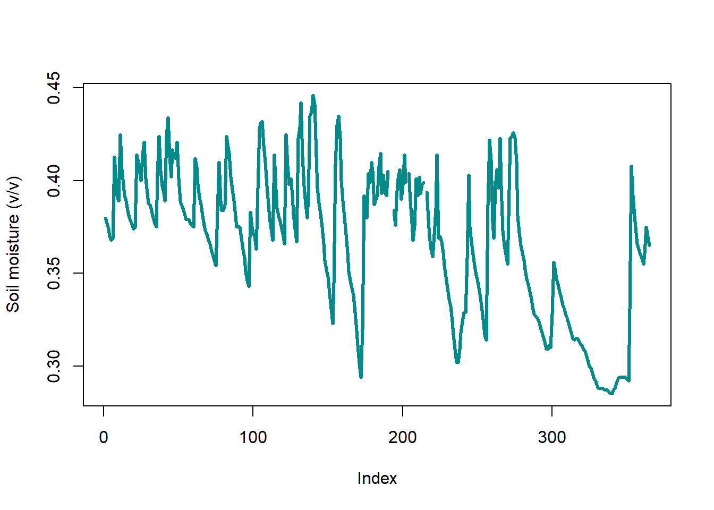
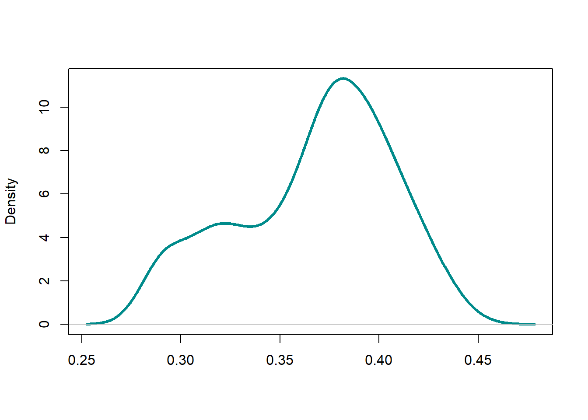

The U.S. Climate Reference Network (USCRN) is a systematic and sustained network of climate monitoring stations. USCRN has sites across Contiguous U.S. along with some in Alaska, and Hawaii. These stations are instrumented to measure meteorological information such as temperature, precipitation, wind speed, along with other relevant hydrologic variables such as soil mosture across multile depths at sub-hourly, daily and monthly time scales. Users can access daily dataset from all station suing the following link: Index of /pub/data/uscrn/products/daily01 (noaa.gov)
Let us extract sample data from a USCRN site in Lafayette, LA, USA for 2021.
# Yearly data from the sample stationCRNdat =read.csv(url("https://www.ncei.noaa.gov/pub/data/uscrn/products/daily01/2021/CRND0103-2021-LA_Lafayette_13_SE.txt"), header=FALSE,sep="")# Data headersheaders=read.csv(url("https://www.ncei.noaa.gov/pub/data/uscrn/products/daily01/headers.txt"), header=FALSE,sep="")# Column names as headers from the text filecolnames(CRNdat)=headers[2,1:ncol(CRNdat)]# Replace fill values with NACRNdat[CRNdat ==-9999]=NACRNdat[CRNdat ==-99]=NACRNdat[CRNdat ==999]=NA# View data samplelibrary(kableExtra)dataTable =kbl(head(CRNdat,6),full_width = F)kable_styling(dataTable,bootstrap_options =c("striped", "hover", "condensed", "responsive"))
WBANNO
LST_DATE
CRX_VN
LONGITUDE
LATITUDE
T_DAILY_MAX
T_DAILY_MIN
T_DAILY_MEAN
T_DAILY_AVG
P_DAILY_CALC
SOLARAD_DAILY
SUR_TEMP_DAILY_TYPE
SUR_TEMP_DAILY_MAX
SUR_TEMP_DAILY_MIN
SUR_TEMP_DAILY_AVG
RH_DAILY_MAX
RH_DAILY_MIN
RH_DAILY_AVG
SOIL_MOISTURE_5_DAILY
SOIL_MOISTURE_10_DAILY
SOIL_MOISTURE_20_DAILY
SOIL_MOISTURE_50_DAILY
SOIL_MOISTURE_100_DAILY
SOIL_TEMP_5_DAILY
SOIL_TEMP_10_DAILY
SOIL_TEMP_20_DAILY
SOIL_TEMP_50_DAILY
SOIL_TEMP_100_DAILY
53960
20210101
2.622
-91.87
30.09
14.0
5.2
9.6
11.0
0.0
12.16
C
18.7
4.6
11.6
92.8
49.3
72.0
0.401
0.372
0.380
0.405
0.381
16.2
15.3
15.5
15.7
15.5
53960
20210102
2.622
-91.87
30.09
10.4
1.9
6.1
6.5
0.0
8.95
C
15.3
0.4
7.3
98.6
61.6
78.4
0.396
0.370
0.377
0.406
0.376
14.4
13.3
14.1
15.2
15.0
53960
20210103
2.622
-91.87
30.09
16.3
-0.1
8.1
7.9
0.0
13.93
C
24.3
-0.9
9.5
100.0
42.1
76.3
0.392
0.368
0.374
0.404
0.373
12.8
11.8
12.8
14.4
14.2
53960
20210104
2.622
-91.87
30.09
22.2
3.7
12.9
12.5
0.0
11.56
C
26.4
2.6
13.2
98.9
47.7
80.2
0.389
0.366
0.370
0.400
0.372
13.0
12.2
12.7
14.0
14.0
53960
20210105
2.622
-91.87
30.09
20.7
4.5
12.6
11.4
0.0
14.37
C
28.9
3.1
13.3
100.0
27.7
71.0
0.388
0.364
0.368
0.399
0.369
13.0
12.1
12.7
13.9
14.0
53960
20210106
2.622
-91.87
30.09
19.4
4.9
12.2
12.6
20.7
9.79
C
23.1
3.5
12.8
98.5
54.7
78.9
0.390
0.363
0.369
0.399
0.370
12.8
12.1
12.5
13.7
13.7
Notice the variables provided in the dataset. As an example, we can plots soil moisture data from a depth of 20 cm for this station for our reference:
# Sample plot for soil moisturex=CRNdat$SOIL_MOISTURE_20_DAILY# Plot time series and density distribution plot(x, type="l", ylab="Soil moisture (v/v)", col="cyan4", lwd=3)plot(density(na.omit(x)), main=" ", xlab="", col="cyan4", lwd=3)

(a) Time series of SM

(b) SM kernel density
Figure 5.1: Soil moisture values at USCRN station in Texas
Excercise:
Taking examples of any two USCRN stations across contrasting hydroclimates, compare and contrast any two recorded variables using time series plots, probability density distribution histograms and scatter plots. Select any year of your liking for the analysis.
Select two seasons for each elected variable and demonstrate the seasonal variability in the records for summer (MAMJJA) and winter (SONDJF) seasons using any two types of multivariate plots.